5-2 リヤタイヤ
構成図
|
1 |
WHEEL ASSY, RR (D2630-B1000) |
2 |
DISC SUB-ASSY, RR (D7703-B1000) |
|
3 |
CALIPER ASSY, DISC BRAKE, RR LH (D7830-B1000) |
4 |
ABSORBER ASSY,SHOCK,RR (D8230-B1000) |
|
5 |
BRACKET, RR ABSORBER (D8715-B1000) |
6 |
BOLT FLANGE, RR DISC (D7828-02300) |
|
7 |
BOLT FLANGE, SHOCK ABSORBER, RR (D8238-00450) |
8 |
NUT, FLANGE (Z5120-00000) |
|
9 |
WASHER, RR AXLE (A1192-B1000) |
10 |
NUT, RR AXLE (A1191-B1000) |
|
11 |
BOLT FLANGE, CALIPER (D7818-02351) |
12 |
BOLT, PT FLANGE (Z2216-63000) |
|
13 |
BRACKET, RR SPEED SENSOR (D2586-B1000) |
14 |
- |
取り外し手順

1.車両メインスイッチのオフ

2.LOUVER SUB-ASSY, RR VENTILATIONおよびCOVER, RR COWL取り外し
-
LOUVER SUB-ASSY, RR VENTILATION（上部）のインナークリップ上部3か所、インサートクリップ3本×２本を外す。（バックアイカメラ装着車はカプラーも外すこと。）
-
COVER, RR COWL（中央）はインナークリップ4か所、プラスチックリベット5か所で固定されている。 テールレンズとライセンスプレートのカプラーを外し、カバーを手前に引き抜く。

3.MUDGUARD, RR、FENDER, RR LHおよびFENDER, RR RH取り外し
-
FENDER, RR LHはドアを開け、ボルト1本、プラスチックリベット2本を外し、3か所で固定されているインナークリップを手前に引き抜いてカバーを外す。

-
FENDER, RR RHは先ずサイドボデーパネルのクリップ4か所を手前に引き外し、手が入る程度浮かせた後、その下側に勘合してあるフェンダーのプラスチックリベット3か所を外す。
-
固定されているインナークリップ3本を手前に引き抜きカバーを外す。

4.COVER, RR COWL, LWRの取り外し
-
COVER, RR COWL, LWR（黒）は左4個、右4個、後方2個のプラスチックリベットとインナークリップ2個で固定されている。
-
後退灯配線を外し、後方に引き抜きカウルを外す。

5.高圧電源ケーブル取り外し
-
フレーム側に後方に固定されているカプラーを外し、後輪モーターに繋がる高圧電源ケーブルの固定クランプ3か所のボルトナットを取り外す。

-
高圧電源ケーブルのクランプ2か所を外し、インバーターのナット3個を外す。
-
インバーターを引き出す。

-
インバーターにはメインバッテリーに繋がる赤端子/黒端子、ホイールに繋がる青端子/緑端子/黄端子がある。
-
青端子/緑端子/黄端子を外し車体と分離する。
※メインスイッチオフ後10秒で電圧は0Vに設計上なっている。

6.リヤホイール取り外し（左）
-
パーキングブレーキを解除し、ブレーキキャリパーのスライドピンボルト2本を外す。
-
併せてブーツの損傷の有無も確認する。

-
車速センサーをブラケットごと取り外す。

-
アクスルシャフトナット36㎜を外す。
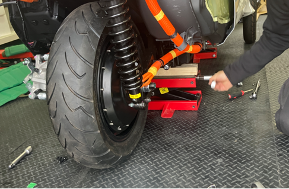
7.リヤホイール取り外し（右）
-
リヤジャッキアップポイントにジャッキを当て、車高が僅かに上がる程度にリフトアップし作業する。
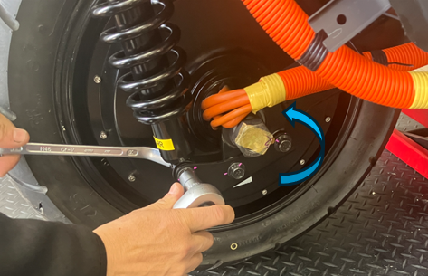
-
アブソーバーロアブラケット2本を外す。 アブソーバーロアボルト＆ナットを緩め、リフトアップした車高を調整しながらボルトを外す。
-
アクスルシャフトナットを外す。
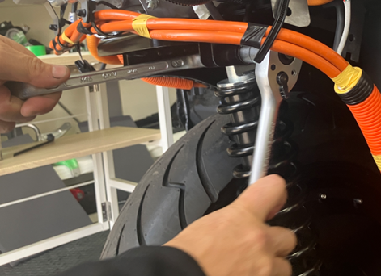
-
アブソーバーのアッパーボルト＆ナットを外し、リヤサスペンションを取り外す。
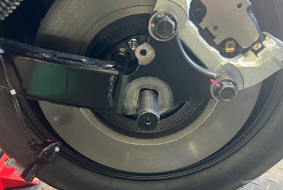
-
アクスルシャフトボルトをL/Rともに外すと左図のようになる。
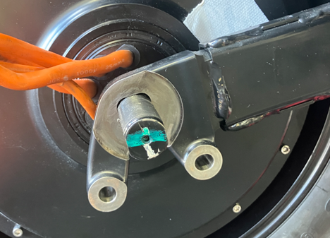
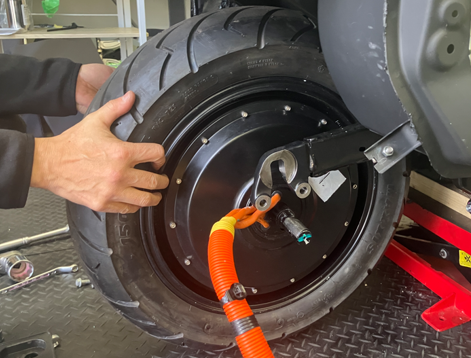
-
リヤアクスルのスイングアームを持ち上げ、インホイールモーターを取り外す。
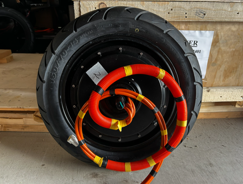
リヤタイヤ交換手順
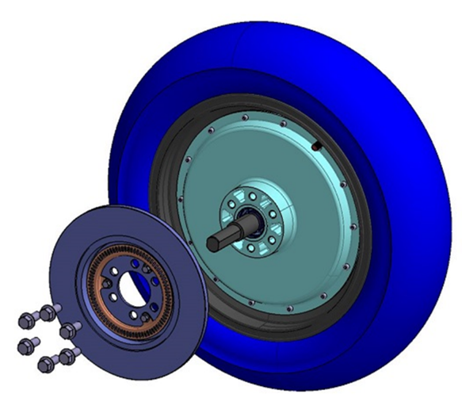
-
タイヤ交換時、リヤホイールにブレーキローターが取り付けされているため、必要に応じてブレーキローターを取り外す。
（タイヤ+ホイールの重量はおよそ38㎏）
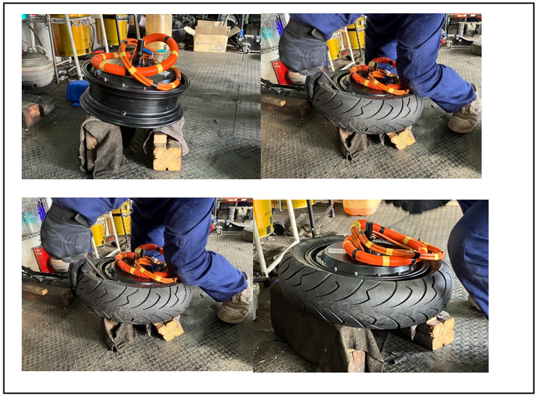
-
治具（左図の場合は角材）を用いアクスルシャフトを床から浮かし、タイヤレバーを使用しタイヤを交換する。
取り付け手順

1.ホイール組付け
-
アクスルシャフトの平面（二面）に合わせ、スイングアームを降ろし、L/Rのナットを仮止めする。
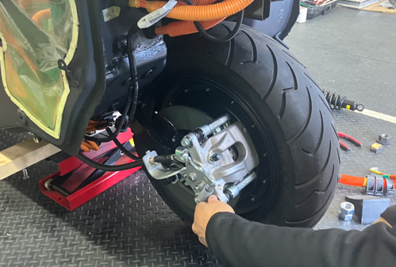
-
ブレーキキャリパーを組み付ける。
-
スライドピンボルト上下を締め付ける。
-
車速センサーブラケットを組み付ける。

2.高圧電源ケーブルの取り付け
-
タイヤハウス前方のクランプボルトナットから順に取り付ける。

-
車体最後部は配線取り付けステーの内側（車体側）を通すこと。

-
インバーターに接続し固定する。
-
インバーター取り付けナット3個を固定する。
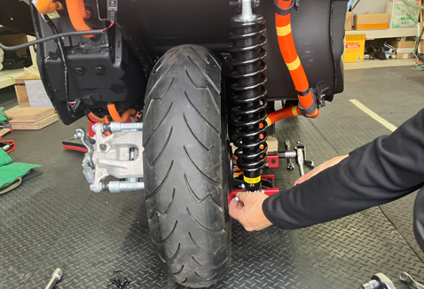
3.サスペンションブラケットの取り付けとシャフトナットの固定
-
リヤショックアブソーバーブラケットボルト取り付ける。
-
ショックアブソーバーボルトをジャッキで車高を調整しながら挿入し上下を仮締めする。

-
ジャッキを下降させタイヤが接地した状態でショックアブソーバーの上下ボルト＆ナットを増し締めする。
-
アクスルシャフトナットL/Rを締め、ダブルナットで固定する。

4.COVER, RR COWL, LWR、FENDER, RR LHおよびFENDER, RR RH取り付け
-
COVER, RR COWL, LW（黒）を左4個、右4個、後方2個のプラスチックリベットとインナークリップ2個で固定し、後退灯のカプラーを嵌める。

-
インナークリップを嵌め、ドアピラー部のプラスチックリベット2本を嵌め、ボルトで固定する。

-
FENDER, RR RHはサイドパネルの下側に入り込むので、パネルを浮かしてプラスチックリベット3本を差し込む。
-
FENDER, RR RHのインナークリップ4か所を押し込み、サイドパネルのインナークリップを外した本数、押し込む。

5.COVER, RR COWLの取り付け
-
テールランプのカプラー、ライセンスランプのカプラーをつなぎ、インナークリップ4か所、プラスチックリベット5本でCOVER, RR COWLを固定する。

-
インサートクリップ3本×2を取り付けし、インナークリップ3本を嵌め込みLOUVER SUB-ASSY, RR VENTILATIONを取り付ける。（バックアイカメラ取り付け車両はカプラーを繋ぐ）。

-
泥除けを4か所のプラスチックリベットで固定する。